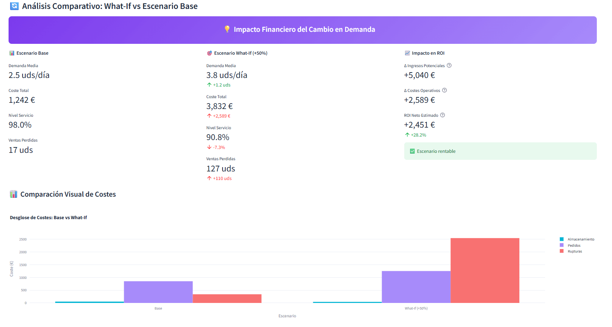
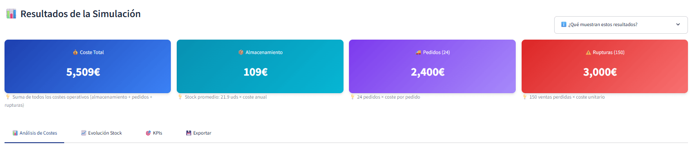
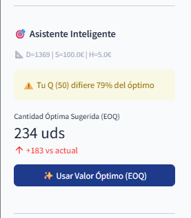

02
The app




A supply chain simulator with a built-in P&L dashboard. It models a full year of operations with discrete events (SimPy) and shows the impact of every inventory decision in euros, not just in units.
It lets you experiment with the key parameters of an inventory policy — reorder point (ROP), order quantity (Q), lead time, demand patterns and cost structure — and instantly see how they affect total cost and service level.
The app loads with pre-computed demo data (a “0-second” experience): charts, financial metrics and the P&L dashboard are visible straight away, with nothing to configure.
The simulator may take a few seconds to start the first time while Streamlit Cloud loads the Python libraries. After that it runs smoothly.



The SimPy engine runs 365 days of operations in under a second (NumPy vectorisation + concurrent processes): it generates daily demand, manages inventory with the ROP-Q policy, and logs orders, deliveries, stockouts and costs at every event.
Seed data with a pre-computed simulation in the session state: the first screen already shows real results, not an empty form.
Units translated into euros: potential revenue, cost/revenue % and a P&L breakdown in executive format.
365 simulated days in <1 s thanks to NumPy vectorisation and concurrent SimPy processes.
Automatic base vs modified scenario comparison with Δ revenue, Δ costs and net ROI as you move a slider.
Corporate theming with 14.7:1 contrast (WCAG AA), explanatory tooltips and real-time validation.
Streamlit session state that keeps results between interactions and exports with no data loss.